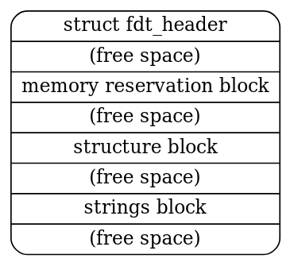
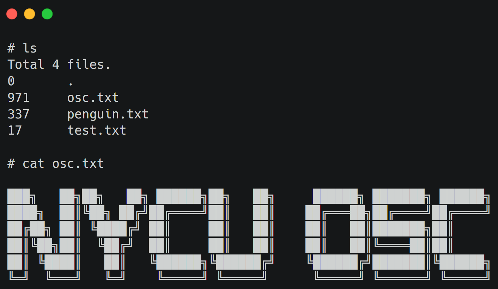

Lab 2: Booting#
Introduction#
Booting is the process of initializing the system environment to run various user programs after a computer reset. This includes loading the kernel, initializing subsystems, matching device drivers, and launching the initial user program to bring up remaining services in user space.
In Lab 2, you’ll implement a bootloader for the OrangePi RV2 that loads kernel images through UART. Additionally, you’ll gain an understanding of devicetrees and initial ramdisk.
Goals of this lab#
Implement a bootloader that loads kernel images through UART.
Understand the structure and purpose of devicetrees.
Understand the concept and usage of initial ramdisk.
Background#
The boot flow of a RISC-V system involves multiple stages:
Boot ROM (Read-Only Memory): Initializes basic hardware and loads the next stage.
U-Boot SPL (Secondary Program Loader): Initializes the main memory and loads the larger bootloader.
OpenSBI (Supervisor Binary Interface): Handles low-level Machine-mode (M-mode) operations.
U-Boot (Universal Bootloader): Loads the actual operating system kernel and boots it.
Kernel: Manages hardware and provides services to user programs.
Understanding the process is crucial for developing low-level system software.
In this lab, you’ll implement a bootloader that loads the actual kernel through UART, providing flexibility during development and debugging.
Basic Exercises#
Basic Exercise 1 - UART Bootloader - 30%#
When loading the kernel image onto the OrangePi RV2, you might experience the process of moving the SD card between your host and the board very often during debugging. You can eliminate this by introducing another bootloader to load the kernel under debugging.
To send the kernel binary through UART, you can devise a protocol to read raw data. It rarely drops data during transmission, so you can keep the protocol simple. Here is a simple example of what a protocol might look like.
header = struct.pack('<II',
0x544F4F42, # "BOOT" in hex
len(kernel_data), # size
)
You can send data from the host to the OrangePi RV2 by writing directly to the Linux serial device file (e.g., /dev/ttyUSB0) using a Python script.
with open('/dev/ttyUSB0', "wb", buffering = 0) as tty:
tty.write(header)
tty.write(kernel_data)
...
You can implement a load command in your shell to receive the kernel image over UART, allowing your shell to act as a convenient interface for development.
Note
Add -serial pty option to create a pseudo TTY device and test your bootloader through QEMU.
You may still want to load your actual kernel image at 0x00200000 (or 0x80200000 on QEMU), but it overlaps with your bootloader.
To avoid overwriting itself, the bootloader should load the new kernel into a different memory address like 0x20000000 (or 0x82000000 on QEMU) and jump to it.
Optionally, a safer practice is to consult <memory> node in the devicetree to determine the available memory region. See Basic Exercise 2: Devicetree for more details.
Todo
Develop a bootloader that listens for a kernel image transmitted over UART and loads it into memory for execution. Design a simple protocol for data transmission to ensure reliability.
Important
Since you are loading the kernel to a different address, you must ensure your kernel is compiled and linked to run at that address, or that it is position-independent. See Pre-MMU execution for more details.
Basic Exercise 2 - Devicetree - 35%#
Hardcoding hardware addresses in the kernel (as done in Lab 1) makes the code non-portable. On systems with simple buses such as OrangePi RV2, the kernel cannot automatically discover connected devices.
To solve this, a devicetree is used. It is a data structure that describes the hardware components, properties, and relationships. The kernel queries this tree to discover devices and load the appropriate drivers, rather than relying on hardcoded addresses.
On most RISC-V platforms, the firmware (OpenSBI or U-Boot) loads the devicetree address in register a1 before jumping to the kernel.
Format#
Devicetree source (.dts): Describes devicetree in human-readable form.
Flattened devicetree (.dtb): Compiled format for simpler and faster parsing in embedded systems.
Parsing#
You should parse the flattened devicetree and provide an interface to query the devicetree for device information. You can get the latest specification of devicetree here.
The structure of the flattened devicetree (.dtb) file is illustrated below:
{kind=link}

The structure is further divided into the FDT header, memory reservation block, structure block, and strings block. Here, we primarily utilize the structure block and strings block to obtain device information, which can be accessed through the header.
The FDT header fields are as follows (5.2. Header):
struct fdt_header {
uint32_t magic;
uint32_t totalsize;
uint32_t off_dt_struct;
uint32_t off_dt_strings;
uint32_t off_mem_rsvmap;
uint32_t version;
uint32_t last_comp_version;
uint32_t boot_cpuid_phys;
uint32_t size_dt_strings;
uint32_t size_dt_struct;
};
The structure block can be further divided into several tokens, each containing its specific data. For more implementation details, please refer to 5.4. Structure Block.
As a practical code reference, you can consult the example here. You need to locate a device node by path and retrieve a property using:
int fdt_path_offset(const void *fdt, const char *path);
const void *fdt_getprop(const void *fdt, int nodeoffset, const char *name, int *lenp);
Todo
In this part, you need to obtain the UART base address from the devicetree and use it to replace the hardcoded value used in Lab 1.
The base address can be found in the reg property at the path /soc/serial for OrangePi RV2 and /soc/uart for QEMU.
Note
QEMU will automatically generate a .dtb file, you can get it with the option -machine virt,dumpdtb=qemu.dtb. You can also run dtc qemu.dtb -o qemu.dts to get the .dts file for easier reading.
Basic Exercise 3 - Initial Ramdisk - 35%#
We haven’t implemented any filesystem and storage driver code yet, so we can’t load anything from the SD card using your kernel. Another approach is loading user programs through the initial ramdisk.
An initial ramdisk (initrd) is a temporary root file system loaded into memory during the boot process. It provides essential files and drivers needed to mount the actual root file system.
New ASCII Format Cpio Archive#
Cpio is a very simple archive format to pack directories and files. Each directory and file is recorded as a header followed by its pathname and content.
Cpio archive: [ header ] → [ filename ] → [ file data ]
In Lab 2, you are going to use the New ASCII Format Cpio format to create a cpio archive. You can first create a rootfs directory and put all files you need inside it. Then, use the following commands to archive it.
cd rootfs
find . | cpio -o -H newc > ../initramfs.cpio
cd ..
This website has a detailed definition of how New ASCII Format Cpio Archive is structured. You should read it and implement a parser to read files in the archive. The New ASCII Format has its header format defined as follows:
struct cpio_newc_header {
char c_magic[6];
char c_ino[8];
char c_mode[8];
char c_uid[8];
char c_gid[8];
char c_nlink[8];
char c_mtime[8];
char c_filesize[8];
char c_devmajor[8];
char c_devminor[8];
char c_rdevmajor[8];
char c_rdevminor[8];
char c_namesize[8];
char c_check[8];
};
Warning
Please note that a NULL byte is appended to the pathname to ensure that the combined size of the fixed header and the pathname is a multiple of 4. Similarly, file data is also padded to align with a 4-byte boundary.
Loading Cpio Archive#
QEMU
Add the argument -initrd initramfs.cpio to QEMU.
OrangePi RV2
kernel.its with ramdisk section (simplified)#/dts-v1/;
/ {
images {
kernel { ... };
fdt { ... };
ramdisk {
description = "Initial Ramdisk";
data = /incbin/("initramfs.cpio");
type = "ramdisk";
arch = "riscv";
os = "linux";
compression = "none";
load = <0x0 0x46100000>;
};
};
configurations {
default = "conf";
conf {
kernel = "kernel";
fdt = "fdt";
ramdisk = "ramdisk";
};
};
};
Initrd-related devicetree nodes and properties:
Node:
/chosenProperty:
linux,initrd-start,linux,initrd-end
The result would be like this:
{kind=link}

Todo
Retrieve the initial ramdisk address with your devicetree in Basic Exercise 2. You must use the address to access the cpio archive dynamically. Hardcoded address is NOT allowed.
Also, implement ls and cat commands in your shell to list and display the content of files in the loaded cpio archive.
Advanced Exercise#
Advanced Exercise - Bootloader Self-Relocation - 10%#
In Basic Exercise 1, we loaded the kernel to a high address to avoid overwriting the bootloader. A more robust approach is for the bootloader to relocate itself to an available region in memory, freeing up the standard entry point for the kernel.
Todo
Modify the bootloader to support self-relocation, moving it to an available region in memory.
Then load the kernel to the standard entry point (0x00200000 on OrangePi RV2 / 0x80200000 on QEMU).
Note
When relocating the bootloader, ensure the destination region does not overlap with the devicetree or the initrd. You might need to adjust the linker script to handle the relocation process.